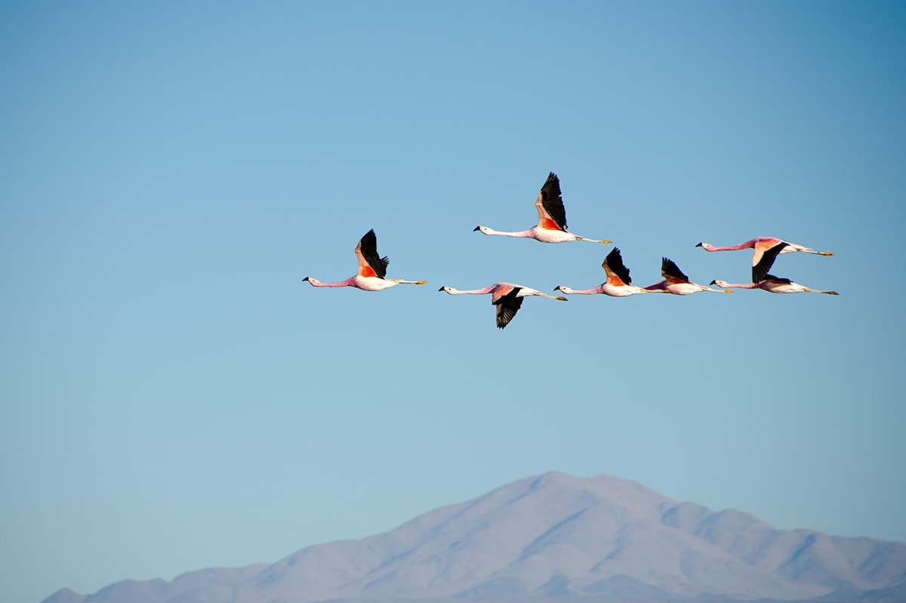

Wanderlust
- 3 lugares para conhecer no mundo -
Atacama
Deserto do Atacama está localizado na região norte do Chile até a fronteira com o Peru. Com cerca de 1000km de extensão, é considerado o deserto mais alto do mundo.

Islândia
Islândia é um país nórdico situado no oceano Atlântico Norte. As características naturais como gêiseres, as piscinas quentes de lama e os glaciares, atraem muitos visitantes para o país.

Japão
Japão é um país insular da Ásia Oriental. Os caracteres que compõem seu nome significam "Origem do Sol", razão pela qual o Japão é às vezes identificado como a "Terra do Sol Nascente".